# Python ≥3.5 is required
import sys
assert sys.version_info >= (3, 5)
# Scikit-Learn ≥0.20 is required
import sklearn
assert sklearn.__version__ >= "0.20"
# Common imports
import numpy as np
import os
# To plot pretty figures
%matplotlib inline
import matplotlib as mpl
import matplotlib.pyplot as plt
mpl.rc('axes', labelsize=14)
mpl.rc('xtick', labelsize=12)
mpl.rc('ytick', labelsize=12)
# Where to save the figures
PROJECT_ROOT_DIR = "."
CHAPTER_ID = "end_to_end_project"
IMAGES_PATH = os.path.join(PROJECT_ROOT_DIR, "images", CHAPTER_ID)
os.makedirs(IMAGES_PATH, exist_ok=True)
def save_fig(fig_id, tight_layout=True, fig_extension="png", resolution=300):
path = os.path.join(IMAGES_PATH, fig_id + "." + fig_extension)
print("Saving figure", fig_id)
if tight_layout:
plt.tight_layout()
plt.savefig(path, format=fig_extension, dpi=resolution)Setup
First, let’s import a few common modules, ensure MatplotLib plots figures inline and prepare a function to save the figures. We also check that Python 3.5 or later is installed (although Python 2.x may work, it is deprecated so we strongly recommend you use Python 3 instead), as well as Scikit-Learn ≥0.20.
Get the Data
Download the Data
import os
import tarfile
import urllib.request
DOWNLOAD_ROOT = "https://raw.githubusercontent.com/ageron/handson-ml2/master/"
HOUSING_PATH = os.path.join("datasets", "housing")
HOUSING_URL = DOWNLOAD_ROOT + "datasets/housing/housing.tgz"
def fetch_housing_data(housing_url=HOUSING_URL, housing_path=HOUSING_PATH):
if not os.path.isdir(housing_path):
os.makedirs(housing_path)
tgz_path = os.path.join(housing_path, "housing.tgz")
urllib.request.urlretrieve(housing_url, tgz_path)
housing_tgz = tarfile.open(tgz_path)
housing_tgz.extractall(path=housing_path)
housing_tgz.close()fetch_housing_data()import pandas as pd
def load_housing_data(housing_path=HOUSING_PATH):
csv_path = os.path.join(housing_path, "housing.csv")
return pd.read_csv(csv_path)Take a Quick Look at the Data Structure
housing = load_housing_data()
housing.head()| longitude | latitude | housing_median_age | total_rooms | total_bedrooms | population | households | median_income | median_house_value | ocean_proximity | |
|---|---|---|---|---|---|---|---|---|---|---|
| 0 | -122.23 | 37.88 | 41.0 | 880.0 | 129.0 | 322.0 | 126.0 | 8.3252 | 452600.0 | NEAR BAY |
| 1 | -122.22 | 37.86 | 21.0 | 7099.0 | 1106.0 | 2401.0 | 1138.0 | 8.3014 | 358500.0 | NEAR BAY |
| 2 | -122.24 | 37.85 | 52.0 | 1467.0 | 190.0 | 496.0 | 177.0 | 7.2574 | 352100.0 | NEAR BAY |
| 3 | -122.25 | 37.85 | 52.0 | 1274.0 | 235.0 | 558.0 | 219.0 | 5.6431 | 341300.0 | NEAR BAY |
| 4 | -122.25 | 37.85 | 52.0 | 1627.0 | 280.0 | 565.0 | 259.0 | 3.8462 | 342200.0 | NEAR BAY |
housing.info()<class 'pandas.core.frame.DataFrame'>
RangeIndex: 20640 entries, 0 to 20639
Data columns (total 10 columns):
# Column Non-Null Count Dtype
--- ------ -------------- -----
0 longitude 20640 non-null float64
1 latitude 20640 non-null float64
2 housing_median_age 20640 non-null float64
3 total_rooms 20640 non-null float64
4 total_bedrooms 20433 non-null float64
5 population 20640 non-null float64
6 households 20640 non-null float64
7 median_income 20640 non-null float64
8 median_house_value 20640 non-null float64
9 ocean_proximity 20640 non-null object
dtypes: float64(9), object(1)
memory usage: 1.6+ MBhousing["ocean_proximity"].value_counts()<1H OCEAN 9136
INLAND 6551
NEAR OCEAN 2658
NEAR BAY 2290
ISLAND 5
Name: ocean_proximity, dtype: int64housing.describe()| longitude | latitude | housing_median_age | total_rooms | total_bedrooms | population | households | median_income | median_house_value | |
|---|---|---|---|---|---|---|---|---|---|
| count | 20640.000000 | 20640.000000 | 20640.000000 | 20640.000000 | 20433.000000 | 20640.000000 | 20640.000000 | 20640.000000 | 20640.000000 |
| mean | -119.569704 | 35.631861 | 28.639486 | 2635.763081 | 537.870553 | 1425.476744 | 499.539680 | 3.870671 | 206855.816909 |
| std | 2.003532 | 2.135952 | 12.585558 | 2181.615252 | 421.385070 | 1132.462122 | 382.329753 | 1.899822 | 115395.615874 |
| min | -124.350000 | 32.540000 | 1.000000 | 2.000000 | 1.000000 | 3.000000 | 1.000000 | 0.499900 | 14999.000000 |
| 25% | -121.800000 | 33.930000 | 18.000000 | 1447.750000 | 296.000000 | 787.000000 | 280.000000 | 2.563400 | 119600.000000 |
| 50% | -118.490000 | 34.260000 | 29.000000 | 2127.000000 | 435.000000 | 1166.000000 | 409.000000 | 3.534800 | 179700.000000 |
| 75% | -118.010000 | 37.710000 | 37.000000 | 3148.000000 | 647.000000 | 1725.000000 | 605.000000 | 4.743250 | 264725.000000 |
| max | -114.310000 | 41.950000 | 52.000000 | 39320.000000 | 6445.000000 | 35682.000000 | 6082.000000 | 15.000100 | 500001.000000 |
%matplotlib inline
import matplotlib.pyplot as plt
housing.hist(bins=50, figsize=(20,15))
save_fig("attribute_histogram_plots")
plt.show()Saving figure attribute_histogram_plots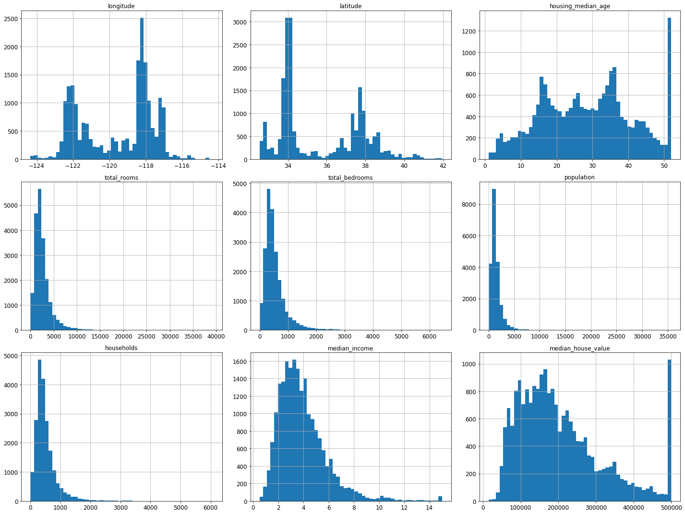
Create a Test Set
# to make this notebook's output identical at every run
np.random.seed(42)import numpy as np
# For illustration only. Sklearn has train_test_split()
def split_train_test(data, test_ratio):
shuffled_indices = np.random.permutation(len(data))
test_set_size = int(len(data) * test_ratio)
test_indices = shuffled_indices[:test_set_size]
train_indices = shuffled_indices[test_set_size:]
return data.iloc[train_indices], data.iloc[test_indices]train_set, test_set = split_train_test(housing, 0.2)
len(train_set)16512len(test_set)4128from zlib import crc32
def test_set_check(identifier, test_ratio):
return crc32(np.int64(identifier)) & 0xffffffff < test_ratio * 2**32
def split_train_test_by_id(data, test_ratio, id_column):
ids = data[id_column]
in_test_set = ids.apply(lambda id_: test_set_check(id_, test_ratio))
return data.loc[~in_test_set], data.loc[in_test_set]The implementation of test_set_check() above works fine in both Python 2 and Python 3. In earlier releases, the following implementation was proposed, which supported any hash function, but was much slower and did not support Python 2:
import hashlib
def test_set_check(identifier, test_ratio, hash=hashlib.md5):
return hash(np.int64(identifier)).digest()[-1] < 256 * test_ratioIf you want an implementation that supports any hash function and is compatible with both Python 2 and Python 3, here is one:
def test_set_check(identifier, test_ratio, hash=hashlib.md5):
return bytearray(hash(np.int64(identifier)).digest())[-1] < 256 * test_ratiohousing_with_id = housing.reset_index() # adds an `index` column
train_set, test_set = split_train_test_by_id(housing_with_id, 0.2, "index")housing_with_id["id"] = housing["longitude"] * 1000 + housing["latitude"]
train_set, test_set = split_train_test_by_id(housing_with_id, 0.2, "id")test_set.head()| index | longitude | latitude | housing_median_age | total_rooms | total_bedrooms | population | households | median_income | median_house_value | ocean_proximity | id | |
|---|---|---|---|---|---|---|---|---|---|---|---|---|
| 8 | 8 | -122.26 | 37.84 | 42.0 | 2555.0 | 665.0 | 1206.0 | 595.0 | 2.0804 | 226700.0 | NEAR BAY | -122222.16 |
| 10 | 10 | -122.26 | 37.85 | 52.0 | 2202.0 | 434.0 | 910.0 | 402.0 | 3.2031 | 281500.0 | NEAR BAY | -122222.15 |
| 11 | 11 | -122.26 | 37.85 | 52.0 | 3503.0 | 752.0 | 1504.0 | 734.0 | 3.2705 | 241800.0 | NEAR BAY | -122222.15 |
| 12 | 12 | -122.26 | 37.85 | 52.0 | 2491.0 | 474.0 | 1098.0 | 468.0 | 3.0750 | 213500.0 | NEAR BAY | -122222.15 |
| 13 | 13 | -122.26 | 37.84 | 52.0 | 696.0 | 191.0 | 345.0 | 174.0 | 2.6736 | 191300.0 | NEAR BAY | -122222.16 |
from sklearn.model_selection import train_test_split
train_set, test_set = train_test_split(housing, test_size=0.2, random_state=42)test_set.head()| longitude | latitude | housing_median_age | total_rooms | total_bedrooms | population | households | median_income | median_house_value | ocean_proximity | |
|---|---|---|---|---|---|---|---|---|---|---|
| 20046 | -119.01 | 36.06 | 25.0 | 1505.0 | NaN | 1392.0 | 359.0 | 1.6812 | 47700.0 | INLAND |
| 3024 | -119.46 | 35.14 | 30.0 | 2943.0 | NaN | 1565.0 | 584.0 | 2.5313 | 45800.0 | INLAND |
| 15663 | -122.44 | 37.80 | 52.0 | 3830.0 | NaN | 1310.0 | 963.0 | 3.4801 | 500001.0 | NEAR BAY |
| 20484 | -118.72 | 34.28 | 17.0 | 3051.0 | NaN | 1705.0 | 495.0 | 5.7376 | 218600.0 | <1H OCEAN |
| 9814 | -121.93 | 36.62 | 34.0 | 2351.0 | NaN | 1063.0 | 428.0 | 3.7250 | 278000.0 | NEAR OCEAN |
housing["median_income"].hist()<matplotlib.axes._subplots.AxesSubplot at 0x7faaf0489250>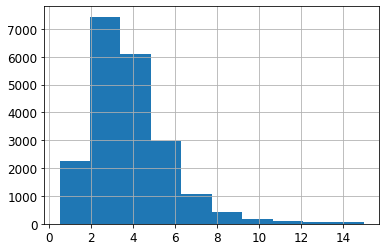
housing["income_cat"] = pd.cut(housing["median_income"],
bins=[0., 1.5, 3.0, 4.5, 6., np.inf],
labels=[1, 2, 3, 4, 5])housing["income_cat"].value_counts()3 7236
2 6581
4 3639
5 2362
1 822
Name: income_cat, dtype: int64housing["income_cat"].hist()<matplotlib.axes._subplots.AxesSubplot at 0x7faaee3e31d0>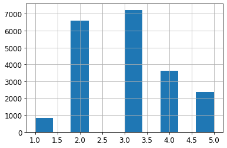
from sklearn.model_selection import StratifiedShuffleSplit
split = StratifiedShuffleSplit(n_splits=1, test_size=0.2, random_state=42)
for train_index, test_index in split.split(housing, housing["income_cat"]):
strat_train_set = housing.loc[train_index]
strat_test_set = housing.loc[test_index]strat_test_set["income_cat"].value_counts() / len(strat_test_set)3 0.350533
2 0.318798
4 0.176357
5 0.114583
1 0.039729
Name: income_cat, dtype: float64housing["income_cat"].value_counts() / len(housing)3 0.350581
2 0.318847
4 0.176308
5 0.114438
1 0.039826
Name: income_cat, dtype: float64def income_cat_proportions(data):
return data["income_cat"].value_counts() / len(data)
train_set, test_set = train_test_split(housing, test_size=0.2, random_state=42)
compare_props = pd.DataFrame({
"Overall": income_cat_proportions(housing),
"Stratified": income_cat_proportions(strat_test_set),
"Random": income_cat_proportions(test_set),
}).sort_index()
compare_props["Rand. %error"] = 100 * compare_props["Random"] / compare_props["Overall"] - 100
compare_props["Strat. %error"] = 100 * compare_props["Stratified"] / compare_props["Overall"] - 100compare_props| Overall | Stratified | Random | Rand. %error | Strat. %error | |
|---|---|---|---|---|---|
| 1 | 0.039826 | 0.039729 | 0.040213 | 0.973236 | -0.243309 |
| 2 | 0.318847 | 0.318798 | 0.324370 | 1.732260 | -0.015195 |
| 3 | 0.350581 | 0.350533 | 0.358527 | 2.266446 | -0.013820 |
| 4 | 0.176308 | 0.176357 | 0.167393 | -5.056334 | 0.027480 |
| 5 | 0.114438 | 0.114583 | 0.109496 | -4.318374 | 0.127011 |
for set_ in (strat_train_set, strat_test_set):
set_.drop("income_cat", axis=1, inplace=True)Discover and Visualize the Data to Gain Insights
housing = strat_train_set.copy()Visualizing Geographical Data
housing.plot(kind="scatter", x="longitude", y="latitude")
save_fig("bad_visualization_plot")Saving figure bad_visualization_plot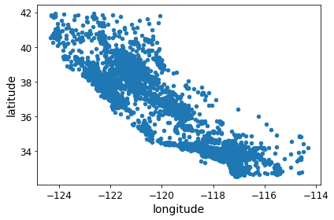
housing.plot(kind="scatter", x="longitude", y="latitude", alpha=0.1)
save_fig("better_visualization_plot")Saving figure better_visualization_plot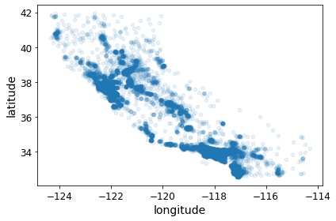
The argument sharex=False fixes a display bug (the x-axis values and legend were not displayed). This is a temporary fix (see: https://github.com/pandas-dev/pandas/issues/10611 ). Thanks to Wilmer Arellano for pointing it out.
housing.plot(kind="scatter", x="longitude", y="latitude", alpha=0.4,
s=housing["population"]/100, label="population", figsize=(10,7),
c="median_house_value", cmap=plt.get_cmap("jet"), colorbar=True,
sharex=False)
plt.legend()
save_fig("housing_prices_scatterplot")Saving figure housing_prices_scatterplot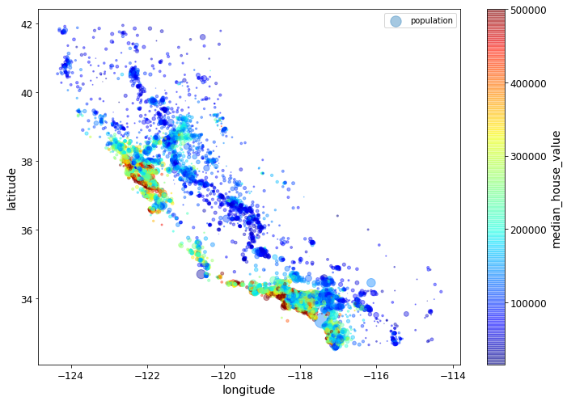
# Download the California image
images_path = os.path.join(PROJECT_ROOT_DIR, "images", "end_to_end_project")
os.makedirs(images_path, exist_ok=True)
DOWNLOAD_ROOT = "https://raw.githubusercontent.com/ageron/handson-ml2/master/"
filename = "california.png"
print("Downloading", filename)
url = DOWNLOAD_ROOT + "images/end_to_end_project/" + filename
urllib.request.urlretrieve(url, os.path.join(images_path, filename))Downloading california.png('./images/end_to_end_project/california.png',
<http.client.HTTPMessage at 0x7fd1784e5050>)import matplotlib.image as mpimg
california_img=mpimg.imread(os.path.join(images_path, filename))
ax = housing.plot(kind="scatter", x="longitude", y="latitude", figsize=(10,7),
s=housing['population']/100, label="Population",
c="median_house_value", cmap=plt.get_cmap("jet"),
colorbar=False, alpha=0.4)
plt.imshow(california_img, extent=[-124.55, -113.80, 32.45, 42.05], alpha=0.5,
cmap=plt.get_cmap("jet"))
plt.ylabel("Latitude", fontsize=14)
plt.xlabel("Longitude", fontsize=14)
prices = housing["median_house_value"]
tick_values = np.linspace(prices.min(), prices.max(), 11)
cbar = plt.colorbar(ticks=tick_values/prices.max())
cbar.ax.set_yticklabels(["$%dk"%(round(v/1000)) for v in tick_values], fontsize=14)
cbar.set_label('Median House Value', fontsize=16)
plt.legend(fontsize=16)
save_fig("california_housing_prices_plot")
plt.show()Saving figure california_housing_prices_plot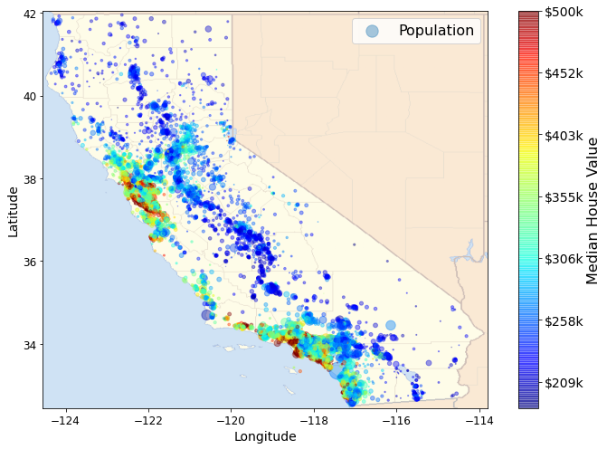
Looking for Correlations
corr_matrix = housing.corr()corr_matrix["median_house_value"].sort_values(ascending=False)median_house_value 1.000000
median_income 0.687160
total_rooms 0.135097
housing_median_age 0.114110
households 0.064506
total_bedrooms 0.047689
population -0.026920
longitude -0.047432
latitude -0.142724
Name: median_house_value, dtype: float64# from pandas.tools.plotting import scatter_matrix # For older versions of Pandas
from pandas.plotting import scatter_matrix
attributes = ["median_house_value", "median_income", "total_rooms",
"housing_median_age"]
scatter_matrix(housing[attributes], figsize=(12, 8))
save_fig("scatter_matrix_plot")Saving figure scatter_matrix_plot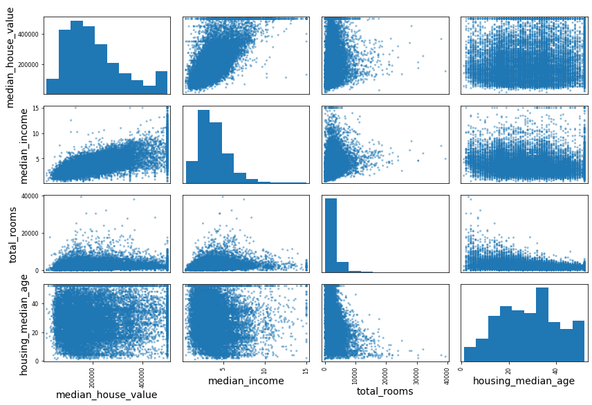
housing.plot(kind="scatter", x="median_income", y="median_house_value",
alpha=0.1)
plt.axis([0, 16, 0, 550000])
save_fig("income_vs_house_value_scatterplot")Saving figure income_vs_house_value_scatterplot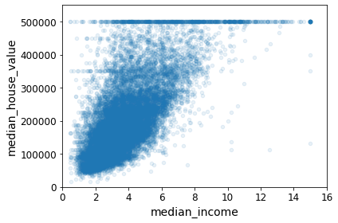
Experimenting with Attribute Combinations
housing["rooms_per_household"] = housing["total_rooms"]/housing["households"]
housing["bedrooms_per_room"] = housing["total_bedrooms"]/housing["total_rooms"]
housing["population_per_household"]=housing["population"]/housing["households"]corr_matrix = housing.corr()
corr_matrix["median_house_value"].sort_values(ascending=False)median_house_value 1.000000
median_income 0.687160
rooms_per_household 0.146285
total_rooms 0.135097
housing_median_age 0.114110
households 0.064506
total_bedrooms 0.047689
population_per_household -0.021985
population -0.026920
longitude -0.047432
latitude -0.142724
bedrooms_per_room -0.259984
Name: median_house_value, dtype: float64housing.plot(kind="scatter", x="rooms_per_household", y="median_house_value",
alpha=0.2)
plt.axis([0, 5, 0, 520000])
plt.show()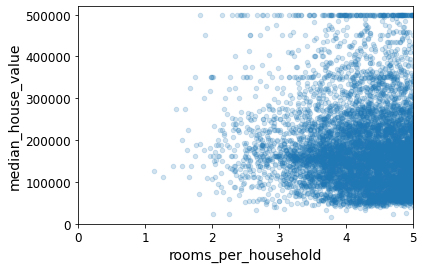
housing.describe()| longitude | latitude | housing_median_age | total_rooms | total_bedrooms | population | households | median_income | median_house_value | rooms_per_household | bedrooms_per_room | population_per_household | |
|---|---|---|---|---|---|---|---|---|---|---|---|---|
| count | 16512.000000 | 16512.000000 | 16512.000000 | 16512.000000 | 16354.000000 | 16512.000000 | 16512.000000 | 16512.000000 | 16512.000000 | 16512.000000 | 16354.000000 | 16512.000000 |
| mean | -119.575834 | 35.639577 | 28.653101 | 2622.728319 | 534.973890 | 1419.790819 | 497.060380 | 3.875589 | 206990.920724 | 5.440341 | 0.212878 | 3.096437 |
| std | 2.001860 | 2.138058 | 12.574726 | 2138.458419 | 412.699041 | 1115.686241 | 375.720845 | 1.904950 | 115703.014830 | 2.611712 | 0.057379 | 11.584826 |
| min | -124.350000 | 32.540000 | 1.000000 | 6.000000 | 2.000000 | 3.000000 | 2.000000 | 0.499900 | 14999.000000 | 1.130435 | 0.100000 | 0.692308 |
| 25% | -121.800000 | 33.940000 | 18.000000 | 1443.000000 | 295.000000 | 784.000000 | 279.000000 | 2.566775 | 119800.000000 | 4.442040 | 0.175304 | 2.431287 |
| 50% | -118.510000 | 34.260000 | 29.000000 | 2119.500000 | 433.000000 | 1164.000000 | 408.000000 | 3.540900 | 179500.000000 | 5.232284 | 0.203031 | 2.817653 |
| 75% | -118.010000 | 37.720000 | 37.000000 | 3141.000000 | 644.000000 | 1719.250000 | 602.000000 | 4.744475 | 263900.000000 | 6.056361 | 0.239831 | 3.281420 |
| max | -114.310000 | 41.950000 | 52.000000 | 39320.000000 | 6210.000000 | 35682.000000 | 5358.000000 | 15.000100 | 500001.000000 | 141.909091 | 1.000000 | 1243.333333 |
Prepare the Data for Machine Learning Algorithms
housing = strat_train_set.drop("median_house_value", axis=1) # drop labels for training set
housing_labels = strat_train_set["median_house_value"].copy()Data Cleaning
In the book 3 options are listed:
housing.dropna(subset=["total_bedrooms"]) # option 1
housing.drop("total_bedrooms", axis=1) # option 2
median = housing["total_bedrooms"].median() # option 3
housing["total_bedrooms"].fillna(median, inplace=True)To demonstrate each of them, let’s create a copy of the housing dataset, but keeping only the rows that contain at least one null. Then it will be easier to visualize exactly what each option does:
sample_incomplete_rows = housing[housing.isnull().any(axis=1)].head()
sample_incomplete_rows| longitude | latitude | housing_median_age | total_rooms | total_bedrooms | population | households | median_income | ocean_proximity | |
|---|---|---|---|---|---|---|---|---|---|
| 4629 | -118.30 | 34.07 | 18.0 | 3759.0 | NaN | 3296.0 | 1462.0 | 2.2708 | <1H OCEAN |
| 6068 | -117.86 | 34.01 | 16.0 | 4632.0 | NaN | 3038.0 | 727.0 | 5.1762 | <1H OCEAN |
| 17923 | -121.97 | 37.35 | 30.0 | 1955.0 | NaN | 999.0 | 386.0 | 4.6328 | <1H OCEAN |
| 13656 | -117.30 | 34.05 | 6.0 | 2155.0 | NaN | 1039.0 | 391.0 | 1.6675 | INLAND |
| 19252 | -122.79 | 38.48 | 7.0 | 6837.0 | NaN | 3468.0 | 1405.0 | 3.1662 | <1H OCEAN |
sample_incomplete_rows.dropna(subset=["total_bedrooms"]) # option 1| longitude | latitude | housing_median_age | total_rooms | total_bedrooms | population | households | median_income | ocean_proximity |
|---|
sample_incomplete_rows.drop("total_bedrooms", axis=1) # option 2| longitude | latitude | housing_median_age | total_rooms | population | households | median_income | ocean_proximity | |
|---|---|---|---|---|---|---|---|---|
| 4629 | -118.30 | 34.07 | 18.0 | 3759.0 | 3296.0 | 1462.0 | 2.2708 | <1H OCEAN |
| 6068 | -117.86 | 34.01 | 16.0 | 4632.0 | 3038.0 | 727.0 | 5.1762 | <1H OCEAN |
| 17923 | -121.97 | 37.35 | 30.0 | 1955.0 | 999.0 | 386.0 | 4.6328 | <1H OCEAN |
| 13656 | -117.30 | 34.05 | 6.0 | 2155.0 | 1039.0 | 391.0 | 1.6675 | INLAND |
| 19252 | -122.79 | 38.48 | 7.0 | 6837.0 | 3468.0 | 1405.0 | 3.1662 | <1H OCEAN |
median = housing["total_bedrooms"].median()
sample_incomplete_rows["total_bedrooms"].fillna(median, inplace=True) # option 3sample_incomplete_rows| longitude | latitude | housing_median_age | total_rooms | total_bedrooms | population | households | median_income | ocean_proximity | |
|---|---|---|---|---|---|---|---|---|---|
| 4629 | -118.30 | 34.07 | 18.0 | 3759.0 | 433.0 | 3296.0 | 1462.0 | 2.2708 | <1H OCEAN |
| 6068 | -117.86 | 34.01 | 16.0 | 4632.0 | 433.0 | 3038.0 | 727.0 | 5.1762 | <1H OCEAN |
| 17923 | -121.97 | 37.35 | 30.0 | 1955.0 | 433.0 | 999.0 | 386.0 | 4.6328 | <1H OCEAN |
| 13656 | -117.30 | 34.05 | 6.0 | 2155.0 | 433.0 | 1039.0 | 391.0 | 1.6675 | INLAND |
| 19252 | -122.79 | 38.48 | 7.0 | 6837.0 | 433.0 | 3468.0 | 1405.0 | 3.1662 | <1H OCEAN |
from sklearn.impute import SimpleImputer
imputer = SimpleImputer(strategy="median")Remove the text attribute because median can only be calculated on numerical attributes:
housing_num = housing.drop("ocean_proximity", axis=1)
# alternatively: housing_num = housing.select_dtypes(include=[np.number])imputer.fit(housing_num)SimpleImputer(strategy='median')imputer.statistics_array([-118.51 , 34.26 , 29. , 2119.5 , 433. , 1164. ,
408. , 3.5409])Check that this is the same as manually computing the median of each attribute:
housing_num.median().valuesarray([-118.51 , 34.26 , 29. , 2119.5 , 433. , 1164. ,
408. , 3.5409])Transform the training set:
X = imputer.transform(housing_num)housing_tr = pd.DataFrame(X, columns=housing_num.columns,
index=housing.index)housing_tr.loc[sample_incomplete_rows.index.values]| longitude | latitude | housing_median_age | total_rooms | total_bedrooms | population | households | median_income | |
|---|---|---|---|---|---|---|---|---|
| 4629 | -118.30 | 34.07 | 18.0 | 3759.0 | 433.0 | 3296.0 | 1462.0 | 2.2708 |
| 6068 | -117.86 | 34.01 | 16.0 | 4632.0 | 433.0 | 3038.0 | 727.0 | 5.1762 |
| 17923 | -121.97 | 37.35 | 30.0 | 1955.0 | 433.0 | 999.0 | 386.0 | 4.6328 |
| 13656 | -117.30 | 34.05 | 6.0 | 2155.0 | 433.0 | 1039.0 | 391.0 | 1.6675 |
| 19252 | -122.79 | 38.48 | 7.0 | 6837.0 | 433.0 | 3468.0 | 1405.0 | 3.1662 |
imputer.strategy'median'housing_tr = pd.DataFrame(X, columns=housing_num.columns,
index=housing_num.index)housing_tr.head()| longitude | latitude | housing_median_age | total_rooms | total_bedrooms | population | households | median_income | |
|---|---|---|---|---|---|---|---|---|
| 17606 | -121.89 | 37.29 | 38.0 | 1568.0 | 351.0 | 710.0 | 339.0 | 2.7042 |
| 18632 | -121.93 | 37.05 | 14.0 | 679.0 | 108.0 | 306.0 | 113.0 | 6.4214 |
| 14650 | -117.20 | 32.77 | 31.0 | 1952.0 | 471.0 | 936.0 | 462.0 | 2.8621 |
| 3230 | -119.61 | 36.31 | 25.0 | 1847.0 | 371.0 | 1460.0 | 353.0 | 1.8839 |
| 3555 | -118.59 | 34.23 | 17.0 | 6592.0 | 1525.0 | 4459.0 | 1463.0 | 3.0347 |
Handling Text and Categorical Attributes
Now let’s preprocess the categorical input feature, ocean_proximity:
housing_cat = housing[["ocean_proximity"]]
housing_cat.head(10)| ocean_proximity | |
|---|---|
| 17606 | <1H OCEAN |
| 18632 | <1H OCEAN |
| 14650 | NEAR OCEAN |
| 3230 | INLAND |
| 3555 | <1H OCEAN |
| 19480 | INLAND |
| 8879 | <1H OCEAN |
| 13685 | INLAND |
| 4937 | <1H OCEAN |
| 4861 | <1H OCEAN |
from sklearn.preprocessing import OrdinalEncoder
ordinal_encoder = OrdinalEncoder()
housing_cat_encoded = ordinal_encoder.fit_transform(housing_cat)
housing_cat_encoded[:10]array([[0.],
[0.],
[4.],
[1.],
[0.],
[1.],
[0.],
[1.],
[0.],
[0.]])ordinal_encoder.categories_[array(['<1H OCEAN', 'INLAND', 'ISLAND', 'NEAR BAY', 'NEAR OCEAN'],
dtype=object)]from sklearn.preprocessing import OneHotEncoder
cat_encoder = OneHotEncoder()
housing_cat_1hot = cat_encoder.fit_transform(housing_cat)
housing_cat_1hot<16512x5 sparse matrix of type '<class 'numpy.float64'>'
with 16512 stored elements in Compressed Sparse Row format>By default, the OneHotEncoder class returns a sparse array, but we can convert it to a dense array if needed by calling the toarray() method:
housing_cat_1hot.toarray()array([[1., 0., 0., 0., 0.],
[1., 0., 0., 0., 0.],
[0., 0., 0., 0., 1.],
...,
[0., 1., 0., 0., 0.],
[1., 0., 0., 0., 0.],
[0., 0., 0., 1., 0.]])Alternatively, you can set sparse=False when creating the OneHotEncoder:
cat_encoder = OneHotEncoder(sparse=False)
housing_cat_1hot = cat_encoder.fit_transform(housing_cat)
housing_cat_1hotarray([[1., 0., 0., 0., 0.],
[1., 0., 0., 0., 0.],
[0., 0., 0., 0., 1.],
...,
[0., 1., 0., 0., 0.],
[1., 0., 0., 0., 0.],
[0., 0., 0., 1., 0.]])cat_encoder.categories_[array(['<1H OCEAN', 'INLAND', 'ISLAND', 'NEAR BAY', 'NEAR OCEAN'],
dtype=object)]Custom Transformers
Let’s create a custom transformer to add extra attributes:
from sklearn.base import BaseEstimator, TransformerMixin
# column index
rooms_ix, bedrooms_ix, population_ix, households_ix = 3, 4, 5, 6
class CombinedAttributesAdder(BaseEstimator, TransformerMixin):
def __init__(self, add_bedrooms_per_room=True): # no *args or **kargs
self.add_bedrooms_per_room = add_bedrooms_per_room
def fit(self, X, y=None):
return self # nothing else to do
def transform(self, X):
rooms_per_household = X[:, rooms_ix] / X[:, households_ix]
population_per_household = X[:, population_ix] / X[:, households_ix]
if self.add_bedrooms_per_room:
bedrooms_per_room = X[:, bedrooms_ix] / X[:, rooms_ix]
return np.c_[X, rooms_per_household, population_per_household,
bedrooms_per_room]
else:
return np.c_[X, rooms_per_household, population_per_household]
attr_adder = CombinedAttributesAdder(add_bedrooms_per_room=False)
housing_extra_attribs = attr_adder.transform(housing.values)Note that I hard coded the indices (3, 4, 5, 6) for concision and clarity in the book, but it would be much cleaner to get them dynamically, like this:
col_names = "total_rooms", "total_bedrooms", "population", "households"
rooms_ix, bedrooms_ix, population_ix, households_ix = [
housing.columns.get_loc(c) for c in col_names] # get the column indicesAlso, housing_extra_attribs is a NumPy array, we’ve lost the column names (unfortunately, that’s a problem with Scikit-Learn). To recover a DataFrame, you could run this:
housing_extra_attribs = pd.DataFrame(
housing_extra_attribs,
columns=list(housing.columns)+["rooms_per_household", "population_per_household"],
index=housing.index)
housing_extra_attribs.head()| longitude | latitude | housing_median_age | total_rooms | total_bedrooms | population | households | median_income | ocean_proximity | rooms_per_household | population_per_household | |
|---|---|---|---|---|---|---|---|---|---|---|---|
| 17606 | -121.89 | 37.29 | 38.0 | 1568.0 | 351.0 | 710.0 | 339.0 | 2.7042 | <1H OCEAN | 4.625369 | 2.094395 |
| 18632 | -121.93 | 37.05 | 14.0 | 679.0 | 108.0 | 306.0 | 113.0 | 6.4214 | <1H OCEAN | 6.00885 | 2.707965 |
| 14650 | -117.2 | 32.77 | 31.0 | 1952.0 | 471.0 | 936.0 | 462.0 | 2.8621 | NEAR OCEAN | 4.225108 | 2.025974 |
| 3230 | -119.61 | 36.31 | 25.0 | 1847.0 | 371.0 | 1460.0 | 353.0 | 1.8839 | INLAND | 5.232295 | 4.135977 |
| 3555 | -118.59 | 34.23 | 17.0 | 6592.0 | 1525.0 | 4459.0 | 1463.0 | 3.0347 | <1H OCEAN | 4.50581 | 3.047847 |
Transformation Pipelines
Now let’s build a pipeline for preprocessing the numerical attributes:
from sklearn.pipeline import Pipeline
from sklearn.preprocessing import StandardScaler
num_pipeline = Pipeline([
('imputer', SimpleImputer(strategy="median")),
('attribs_adder', CombinedAttributesAdder()),
('std_scaler', StandardScaler()),
])
housing_num_tr = num_pipeline.fit_transform(housing_num)housing_num_trarray([[-1.15604281, 0.77194962, 0.74333089, ..., -0.31205452,
-0.08649871, 0.15531753],
[-1.17602483, 0.6596948 , -1.1653172 , ..., 0.21768338,
-0.03353391, -0.83628902],
[ 1.18684903, -1.34218285, 0.18664186, ..., -0.46531516,
-0.09240499, 0.4222004 ],
...,
[ 1.58648943, -0.72478134, -1.56295222, ..., 0.3469342 ,
-0.03055414, -0.52177644],
[ 0.78221312, -0.85106801, 0.18664186, ..., 0.02499488,
0.06150916, -0.30340741],
[-1.43579109, 0.99645926, 1.85670895, ..., -0.22852947,
-0.09586294, 0.10180567]])from sklearn.compose import ColumnTransformer
num_attribs = list(housing_num)
cat_attribs = ["ocean_proximity"]
full_pipeline = ColumnTransformer([
("num", num_pipeline, num_attribs),
("cat", OneHotEncoder(), cat_attribs),
])
housing_prepared = full_pipeline.fit_transform(housing)housing_preparedarray([[-1.15604281, 0.77194962, 0.74333089, ..., 0. ,
0. , 0. ],
[-1.17602483, 0.6596948 , -1.1653172 , ..., 0. ,
0. , 0. ],
[ 1.18684903, -1.34218285, 0.18664186, ..., 0. ,
0. , 1. ],
...,
[ 1.58648943, -0.72478134, -1.56295222, ..., 0. ,
0. , 0. ],
[ 0.78221312, -0.85106801, 0.18664186, ..., 0. ,
0. , 0. ],
[-1.43579109, 0.99645926, 1.85670895, ..., 0. ,
1. , 0. ]])housing_prepared.shape(16512, 16)For reference, here is the old solution based on a DataFrameSelector transformer (to just select a subset of the Pandas DataFrame columns), and a FeatureUnion:
from sklearn.base import BaseEstimator, TransformerMixin
# Create a class to select numerical or categorical columns
class OldDataFrameSelector(BaseEstimator, TransformerMixin):
def __init__(self, attribute_names):
self.attribute_names = attribute_names
def fit(self, X, y=None):
return self
def transform(self, X):
return X[self.attribute_names].valuesNow let’s join all these components into a big pipeline that will preprocess both the numerical and the categorical features:
num_attribs = list(housing_num)
cat_attribs = ["ocean_proximity"]
old_num_pipeline = Pipeline([
('selector', OldDataFrameSelector(num_attribs)),
('imputer', SimpleImputer(strategy="median")),
('attribs_adder', CombinedAttributesAdder()),
('std_scaler', StandardScaler()),
])
old_cat_pipeline = Pipeline([
('selector', OldDataFrameSelector(cat_attribs)),
('cat_encoder', OneHotEncoder(sparse=False)),
])from sklearn.pipeline import FeatureUnion
old_full_pipeline = FeatureUnion(transformer_list=[
("num_pipeline", old_num_pipeline),
("cat_pipeline", old_cat_pipeline),
])old_housing_prepared = old_full_pipeline.fit_transform(housing)
old_housing_preparedarray([[-1.15604281, 0.77194962, 0.74333089, ..., 0. ,
0. , 0. ],
[-1.17602483, 0.6596948 , -1.1653172 , ..., 0. ,
0. , 0. ],
[ 1.18684903, -1.34218285, 0.18664186, ..., 0. ,
0. , 1. ],
...,
[ 1.58648943, -0.72478134, -1.56295222, ..., 0. ,
0. , 0. ],
[ 0.78221312, -0.85106801, 0.18664186, ..., 0. ,
0. , 0. ],
[-1.43579109, 0.99645926, 1.85670895, ..., 0. ,
1. , 0. ]])The result is the same as with the ColumnTransformer:
np.allclose(housing_prepared, old_housing_prepared)TrueSelect and Train a Model
Training and Evaluating on the Training Set
from sklearn.linear_model import LinearRegression
lin_reg = LinearRegression()
lin_reg.fit(housing_prepared, housing_labels)LinearRegression()# let's try the full preprocessing pipeline on a few training instances
some_data = housing.iloc[:5]
some_labels = housing_labels.iloc[:5]
some_data_prepared = full_pipeline.transform(some_data)
print("Predictions:", lin_reg.predict(some_data_prepared))Predictions: [210644.60459286 317768.80697211 210956.43331178 59218.98886849
189747.55849879]Compare against the actual values:
print("Labels:", list(some_labels))Labels: [286600.0, 340600.0, 196900.0, 46300.0, 254500.0]some_data_preparedarray([[-1.15604281, 0.77194962, 0.74333089, -0.49323393, -0.44543821,
-0.63621141, -0.42069842, -0.61493744, -0.31205452, -0.08649871,
0.15531753, 1. , 0. , 0. , 0. ,
0. ],
[-1.17602483, 0.6596948 , -1.1653172 , -0.90896655, -1.0369278 ,
-0.99833135, -1.02222705, 1.33645936, 0.21768338, -0.03353391,
-0.83628902, 1. , 0. , 0. , 0. ,
0. ],
[ 1.18684903, -1.34218285, 0.18664186, -0.31365989, -0.15334458,
-0.43363936, -0.0933178 , -0.5320456 , -0.46531516, -0.09240499,
0.4222004 , 0. , 0. , 0. , 0. ,
1. ],
[-0.01706767, 0.31357576, -0.29052016, -0.36276217, -0.39675594,
0.03604096, -0.38343559, -1.04556555, -0.07966124, 0.08973561,
-0.19645314, 0. , 1. , 0. , 0. ,
0. ],
[ 0.49247384, -0.65929936, -0.92673619, 1.85619316, 2.41221109,
2.72415407, 2.57097492, -0.44143679, -0.35783383, -0.00419445,
0.2699277 , 1. , 0. , 0. , 0. ,
0. ]])from sklearn.metrics import mean_squared_error
housing_predictions = lin_reg.predict(housing_prepared)
lin_mse = mean_squared_error(housing_labels, housing_predictions)
lin_rmse = np.sqrt(lin_mse)
lin_rmse68628.19819848923Note: since Scikit-Learn 0.22, you can get the RMSE directly by calling the mean_squared_error() function with squared=False.
from sklearn.metrics import mean_absolute_error
lin_mae = mean_absolute_error(housing_labels, housing_predictions)
lin_mae49439.89599001897from sklearn.tree import DecisionTreeRegressor
tree_reg = DecisionTreeRegressor(random_state=42)
tree_reg.fit(housing_prepared, housing_labels)DecisionTreeRegressor(random_state=42)housing_predictions = tree_reg.predict(housing_prepared)
tree_mse = mean_squared_error(housing_labels, housing_predictions)
tree_rmse = np.sqrt(tree_mse)
tree_rmse0.0Better Evaluation Using Cross-Validation
from sklearn.model_selection import cross_val_score
scores = cross_val_score(tree_reg, housing_prepared, housing_labels,
scoring="neg_mean_squared_error", cv=10)
tree_rmse_scores = np.sqrt(-scores)def display_scores(scores):
print("Scores:", scores)
print("Mean:", scores.mean())
print("Standard deviation:", scores.std())
display_scores(tree_rmse_scores)Scores: [70194.33680785 66855.16363941 72432.58244769 70758.73896782
71115.88230639 75585.14172901 70262.86139133 70273.6325285
75366.87952553 71231.65726027]
Mean: 71407.68766037929
Standard deviation: 2439.4345041191004lin_scores = cross_val_score(lin_reg, housing_prepared, housing_labels,
scoring="neg_mean_squared_error", cv=10)
lin_rmse_scores = np.sqrt(-lin_scores)
display_scores(lin_rmse_scores)Scores: [66782.73843989 66960.118071 70347.95244419 74739.57052552
68031.13388938 71193.84183426 64969.63056405 68281.61137997
71552.91566558 67665.10082067]
Mean: 69052.46136345083
Standard deviation: 2731.674001798342Note: we specify n_estimators=100 to be future-proof since the default value is going to change to 100 in Scikit-Learn 0.22 (for simplicity, this is not shown in the book).
from sklearn.ensemble import RandomForestRegressor
forest_reg = RandomForestRegressor(n_estimators=100, random_state=42)
forest_reg.fit(housing_prepared, housing_labels)RandomForestRegressor(random_state=42)housing_predictions = forest_reg.predict(housing_prepared)
forest_mse = mean_squared_error(housing_labels, housing_predictions)
forest_rmse = np.sqrt(forest_mse)
forest_rmse18603.515021376355from sklearn.model_selection import cross_val_score
forest_scores = cross_val_score(forest_reg, housing_prepared, housing_labels,
scoring="neg_mean_squared_error", cv=10)
forest_rmse_scores = np.sqrt(-forest_scores)
display_scores(forest_rmse_scores)Scores: [49519.80364233 47461.9115823 50029.02762854 52325.28068953
49308.39426421 53446.37892622 48634.8036574 47585.73832311
53490.10699751 50021.5852922 ]
Mean: 50182.303100336096
Standard deviation: 2097.0810550985693scores = cross_val_score(lin_reg, housing_prepared, housing_labels, scoring="neg_mean_squared_error", cv=10)
pd.Series(np.sqrt(-scores)).describe()count 10.000000
mean 69052.461363
std 2879.437224
min 64969.630564
25% 67136.363758
50% 68156.372635
75% 70982.369487
max 74739.570526
dtype: float64from sklearn.svm import SVR
svm_reg = SVR(kernel="linear")
svm_reg.fit(housing_prepared, housing_labels)
housing_predictions = svm_reg.predict(housing_prepared)
svm_mse = mean_squared_error(housing_labels, housing_predictions)
svm_rmse = np.sqrt(svm_mse)
svm_rmse111094.6308539982Fine-Tune Your Model
Grid Search
from sklearn.model_selection import GridSearchCV
param_grid = [
# try 12 (3×4) combinations of hyperparameters
{'n_estimators': [3, 10, 30], 'max_features': [2, 4, 6, 8]},
# then try 6 (2×3) combinations with bootstrap set as False
{'bootstrap': [False], 'n_estimators': [3, 10], 'max_features': [2, 3, 4]},
]
forest_reg = RandomForestRegressor(random_state=42)
# train across 5 folds, that's a total of (12+6)*5=90 rounds of training
grid_search = GridSearchCV(forest_reg, param_grid, cv=5,
scoring='neg_mean_squared_error',
return_train_score=True)
grid_search.fit(housing_prepared, housing_labels)GridSearchCV(cv=5, estimator=RandomForestRegressor(random_state=42),
param_grid=[{'max_features': [2, 4, 6, 8],
'n_estimators': [3, 10, 30]},
{'bootstrap': [False], 'max_features': [2, 3, 4],
'n_estimators': [3, 10]}],
return_train_score=True, scoring='neg_mean_squared_error')The best hyperparameter combination found:
grid_search.best_params_{'max_features': 8, 'n_estimators': 30}grid_search.best_estimator_RandomForestRegressor(max_features=8, n_estimators=30, random_state=42)Let’s look at the score of each hyperparameter combination tested during the grid search:
cvres = grid_search.cv_results_
for mean_score, params in zip(cvres["mean_test_score"], cvres["params"]):
print(np.sqrt(-mean_score), params)63669.11631261028 {'max_features': 2, 'n_estimators': 3}
55627.099719926795 {'max_features': 2, 'n_estimators': 10}
53384.57275149205 {'max_features': 2, 'n_estimators': 30}
60965.950449450494 {'max_features': 4, 'n_estimators': 3}
52741.04704299915 {'max_features': 4, 'n_estimators': 10}
50377.40461678399 {'max_features': 4, 'n_estimators': 30}
58663.93866579625 {'max_features': 6, 'n_estimators': 3}
52006.19873526564 {'max_features': 6, 'n_estimators': 10}
50146.51167415009 {'max_features': 6, 'n_estimators': 30}
57869.25276169646 {'max_features': 8, 'n_estimators': 3}
51711.127883959234 {'max_features': 8, 'n_estimators': 10}
49682.273345071546 {'max_features': 8, 'n_estimators': 30}
62895.06951262424 {'bootstrap': False, 'max_features': 2, 'n_estimators': 3}
54658.176157539405 {'bootstrap': False, 'max_features': 2, 'n_estimators': 10}
59470.40652318466 {'bootstrap': False, 'max_features': 3, 'n_estimators': 3}
52724.9822587892 {'bootstrap': False, 'max_features': 3, 'n_estimators': 10}
57490.5691951261 {'bootstrap': False, 'max_features': 4, 'n_estimators': 3}
51009.495668875716 {'bootstrap': False, 'max_features': 4, 'n_estimators': 10}pd.DataFrame(grid_search.cv_results_)| mean_fit_time | std_fit_time | mean_score_time | std_score_time | param_max_features | param_n_estimators | param_bootstrap | params | split0_test_score | split1_test_score | ... | mean_test_score | std_test_score | rank_test_score | split0_train_score | split1_train_score | split2_train_score | split3_train_score | split4_train_score | mean_train_score | std_train_score | |
|---|---|---|---|---|---|---|---|---|---|---|---|---|---|---|---|---|---|---|---|---|---|
| 0 | 0.050905 | 0.004097 | 0.002766 | 0.000256 | 2 | 3 | NaN | {'max_features': 2, 'n_estimators': 3} | -3.837622e+09 | -4.147108e+09 | ... | -4.053756e+09 | 1.519591e+08 | 18 | -1.064113e+09 | -1.105142e+09 | -1.116550e+09 | -1.112342e+09 | -1.129650e+09 | -1.105559e+09 | 2.220402e+07 |
| 1 | 0.143706 | 0.002170 | 0.007205 | 0.000304 | 2 | 10 | NaN | {'max_features': 2, 'n_estimators': 10} | -3.047771e+09 | -3.254861e+09 | ... | -3.094374e+09 | 1.327062e+08 | 11 | -5.927175e+08 | -5.870952e+08 | -5.776964e+08 | -5.716332e+08 | -5.802501e+08 | -5.818785e+08 | 7.345821e+06 |
| 2 | 0.410306 | 0.004403 | 0.019903 | 0.000964 | 2 | 30 | NaN | {'max_features': 2, 'n_estimators': 30} | -2.689185e+09 | -3.021086e+09 | ... | -2.849913e+09 | 1.626875e+08 | 9 | -4.381089e+08 | -4.391272e+08 | -4.371702e+08 | -4.376955e+08 | -4.452654e+08 | -4.394734e+08 | 2.966320e+06 |
| 3 | 0.069762 | 0.000987 | 0.002409 | 0.000080 | 4 | 3 | NaN | {'max_features': 4, 'n_estimators': 3} | -3.730181e+09 | -3.786886e+09 | ... | -3.716847e+09 | 1.631510e+08 | 16 | -9.865163e+08 | -1.012565e+09 | -9.169425e+08 | -1.037400e+09 | -9.707739e+08 | -9.848396e+08 | 4.084607e+07 |
| 4 | 0.227188 | 0.001444 | 0.006829 | 0.000090 | 4 | 10 | NaN | {'max_features': 4, 'n_estimators': 10} | -2.666283e+09 | -2.784511e+09 | ... | -2.781618e+09 | 1.268607e+08 | 8 | -5.097115e+08 | -5.162820e+08 | -4.962893e+08 | -5.436192e+08 | -5.160297e+08 | -5.163863e+08 | 1.542862e+07 |
| 5 | 0.711381 | 0.038618 | 0.020686 | 0.001864 | 4 | 30 | NaN | {'max_features': 4, 'n_estimators': 30} | -2.387153e+09 | -2.588448e+09 | ... | -2.537883e+09 | 1.214614e+08 | 3 | -3.838835e+08 | -3.880268e+08 | -3.790867e+08 | -4.040957e+08 | -3.845520e+08 | -3.879289e+08 | 8.571233e+06 |
| 6 | 0.094580 | 0.003861 | 0.002426 | 0.000118 | 6 | 3 | NaN | {'max_features': 6, 'n_estimators': 3} | -3.119657e+09 | -3.586319e+09 | ... | -3.441458e+09 | 1.893056e+08 | 14 | -9.245343e+08 | -8.886939e+08 | -9.353135e+08 | -9.009801e+08 | -8.624664e+08 | -9.023976e+08 | 2.591445e+07 |
| 7 | 0.311034 | 0.005247 | 0.006980 | 0.000283 | 6 | 10 | NaN | {'max_features': 6, 'n_estimators': 10} | -2.549663e+09 | -2.782039e+09 | ... | -2.704645e+09 | 1.471569e+08 | 6 | -4.980344e+08 | -5.045869e+08 | -4.994664e+08 | -4.990325e+08 | -5.055542e+08 | -5.013349e+08 | 3.100456e+06 |
| 8 | 0.979656 | 0.048790 | 0.021028 | 0.001812 | 6 | 30 | NaN | {'max_features': 6, 'n_estimators': 30} | -2.370010e+09 | -2.583638e+09 | ... | -2.514673e+09 | 1.285080e+08 | 2 | -3.838538e+08 | -3.804711e+08 | -3.805218e+08 | -3.856095e+08 | -3.901917e+08 | -3.841296e+08 | 3.617057e+06 |
| 9 | 0.118484 | 0.001009 | 0.002239 | 0.000068 | 8 | 3 | NaN | {'max_features': 8, 'n_estimators': 3} | -3.353504e+09 | -3.348552e+09 | ... | -3.348850e+09 | 1.241939e+08 | 13 | -9.228123e+08 | -8.553031e+08 | -8.603321e+08 | -8.881964e+08 | -9.151287e+08 | -8.883545e+08 | 2.750227e+07 |
| 10 | 0.401726 | 0.005465 | 0.007028 | 0.000345 | 8 | 10 | NaN | {'max_features': 8, 'n_estimators': 10} | -2.571970e+09 | -2.718994e+09 | ... | -2.674041e+09 | 1.392777e+08 | 5 | -4.932416e+08 | -4.815238e+08 | -4.730979e+08 | -5.155367e+08 | -4.985555e+08 | -4.923911e+08 | 1.459294e+07 |
| 11 | 1.236572 | 0.036875 | 0.019325 | 0.000252 | 8 | 30 | NaN | {'max_features': 8, 'n_estimators': 30} | -2.357390e+09 | -2.546640e+09 | ... | -2.468328e+09 | 1.091662e+08 | 1 | -3.841658e+08 | -3.744500e+08 | -3.773239e+08 | -3.882250e+08 | -3.810005e+08 | -3.810330e+08 | 4.871017e+06 |
| 12 | 0.064666 | 0.001042 | 0.002780 | 0.000240 | 2 | 3 | False | {'bootstrap': False, 'max_features': 2, 'n_est... | -3.785816e+09 | -4.166012e+09 | ... | -3.955790e+09 | 1.900964e+08 | 17 | -0.000000e+00 | -0.000000e+00 | -0.000000e+00 | -0.000000e+00 | -0.000000e+00 | 0.000000e+00 | 0.000000e+00 |
| 13 | 0.213941 | 0.000996 | 0.007956 | 0.000267 | 2 | 10 | False | {'bootstrap': False, 'max_features': 2, 'n_est... | -2.810721e+09 | -3.107789e+09 | ... | -2.987516e+09 | 1.539234e+08 | 10 | -6.056477e-02 | -0.000000e+00 | -0.000000e+00 | -0.000000e+00 | -2.967449e+00 | -6.056027e-01 | 1.181156e+00 |
| 14 | 0.090480 | 0.003167 | 0.002681 | 0.000082 | 3 | 3 | False | {'bootstrap': False, 'max_features': 3, 'n_est... | -3.618324e+09 | -3.441527e+09 | ... | -3.536729e+09 | 7.795057e+07 | 15 | -0.000000e+00 | -0.000000e+00 | -0.000000e+00 | -0.000000e+00 | -6.072840e+01 | -1.214568e+01 | 2.429136e+01 |
| 15 | 0.286396 | 0.004578 | 0.008019 | 0.000384 | 3 | 10 | False | {'bootstrap': False, 'max_features': 3, 'n_est... | -2.757999e+09 | -2.851737e+09 | ... | -2.779924e+09 | 6.286720e+07 | 7 | -2.089484e+01 | -0.000000e+00 | -0.000000e+00 | -0.000000e+00 | -5.465556e+00 | -5.272080e+00 | 8.093117e+00 |
| 16 | 0.109239 | 0.002999 | 0.003399 | 0.001579 | 4 | 3 | False | {'bootstrap': False, 'max_features': 4, 'n_est... | -3.134040e+09 | -3.559375e+09 | ... | -3.305166e+09 | 1.879165e+08 | 12 | -0.000000e+00 | -0.000000e+00 | -0.000000e+00 | -0.000000e+00 | -0.000000e+00 | 0.000000e+00 | 0.000000e+00 |
| 17 | 0.370459 | 0.017424 | 0.007863 | 0.000056 | 4 | 10 | False | {'bootstrap': False, 'max_features': 4, 'n_est... | -2.525578e+09 | -2.710011e+09 | ... | -2.601969e+09 | 1.088048e+08 | 4 | -0.000000e+00 | -1.514119e-02 | -0.000000e+00 | -0.000000e+00 | -0.000000e+00 | -3.028238e-03 | 6.056477e-03 |
18 rows × 23 columns
Randomized Search
from sklearn.model_selection import RandomizedSearchCV
from scipy.stats import randint
param_distribs = {
'n_estimators': randint(low=1, high=200),
'max_features': randint(low=1, high=8),
}
forest_reg = RandomForestRegressor(random_state=42)
rnd_search = RandomizedSearchCV(forest_reg, param_distributions=param_distribs,
n_iter=10, cv=5, scoring='neg_mean_squared_error', random_state=42)
rnd_search.fit(housing_prepared, housing_labels)RandomizedSearchCV(cv=5, estimator=RandomForestRegressor(random_state=42),
param_distributions={'max_features': <scipy.stats._distn_infrastructure.rv_frozen object at 0x7fd1b96682d0>,
'n_estimators': <scipy.stats._distn_infrastructure.rv_frozen object at 0x7fd1b9668b10>},
random_state=42, scoring='neg_mean_squared_error')cvres = rnd_search.cv_results_
for mean_score, params in zip(cvres["mean_test_score"], cvres["params"]):
print(np.sqrt(-mean_score), params)49150.70756927707 {'max_features': 7, 'n_estimators': 180}
51389.889203389284 {'max_features': 5, 'n_estimators': 15}
50796.155224308866 {'max_features': 3, 'n_estimators': 72}
50835.13360315349 {'max_features': 5, 'n_estimators': 21}
49280.9449827171 {'max_features': 7, 'n_estimators': 122}
50774.90662363929 {'max_features': 3, 'n_estimators': 75}
50682.78888164288 {'max_features': 3, 'n_estimators': 88}
49608.99608105296 {'max_features': 5, 'n_estimators': 100}
50473.61930350219 {'max_features': 3, 'n_estimators': 150}
64429.84143294435 {'max_features': 5, 'n_estimators': 2}Analyze the Best Models and Their Errors
feature_importances = grid_search.best_estimator_.feature_importances_
feature_importancesarray([7.33442355e-02, 6.29090705e-02, 4.11437985e-02, 1.46726854e-02,
1.41064835e-02, 1.48742809e-02, 1.42575993e-02, 3.66158981e-01,
5.64191792e-02, 1.08792957e-01, 5.33510773e-02, 1.03114883e-02,
1.64780994e-01, 6.02803867e-05, 1.96041560e-03, 2.85647464e-03])extra_attribs = ["rooms_per_hhold", "pop_per_hhold", "bedrooms_per_room"]
#cat_encoder = cat_pipeline.named_steps["cat_encoder"] # old solution
cat_encoder = full_pipeline.named_transformers_["cat"]
cat_one_hot_attribs = list(cat_encoder.categories_[0])
attributes = num_attribs + extra_attribs + cat_one_hot_attribs
sorted(zip(feature_importances, attributes), reverse=True)[(0.36615898061813423, 'median_income'),
(0.16478099356159054, 'INLAND'),
(0.10879295677551575, 'pop_per_hhold'),
(0.07334423551601243, 'longitude'),
(0.06290907048262032, 'latitude'),
(0.056419179181954014, 'rooms_per_hhold'),
(0.053351077347675815, 'bedrooms_per_room'),
(0.04114379847872964, 'housing_median_age'),
(0.014874280890402769, 'population'),
(0.014672685420543239, 'total_rooms'),
(0.014257599323407808, 'households'),
(0.014106483453584104, 'total_bedrooms'),
(0.010311488326303788, '<1H OCEAN'),
(0.0028564746373201584, 'NEAR OCEAN'),
(0.0019604155994780706, 'NEAR BAY'),
(6.0280386727366e-05, 'ISLAND')]Evaluate Your System on the Test Set
final_model = grid_search.best_estimator_
X_test = strat_test_set.drop("median_house_value", axis=1)
y_test = strat_test_set["median_house_value"].copy()
X_test_prepared = full_pipeline.transform(X_test)
final_predictions = final_model.predict(X_test_prepared)
final_mse = mean_squared_error(y_test, final_predictions)
final_rmse = np.sqrt(final_mse)final_rmse47730.22690385927We can compute a 95% confidence interval for the test RMSE:
from scipy import stats
confidence = 0.95
squared_errors = (final_predictions - y_test) ** 2
np.sqrt(stats.t.interval(confidence, len(squared_errors) - 1,
loc=squared_errors.mean(),
scale=stats.sem(squared_errors)))array([45685.10470776, 49691.25001878])We could compute the interval manually like this:
m = len(squared_errors)
mean = squared_errors.mean()
tscore = stats.t.ppf((1 + confidence) / 2, df=m - 1)
tmargin = tscore * squared_errors.std(ddof=1) / np.sqrt(m)
np.sqrt(mean - tmargin), np.sqrt(mean + tmargin)(45685.10470776014, 49691.25001877871)Alternatively, we could use a z-scores rather than t-scores:
zscore = stats.norm.ppf((1 + confidence) / 2)
zmargin = zscore * squared_errors.std(ddof=1) / np.sqrt(m)
np.sqrt(mean - zmargin), np.sqrt(mean + zmargin)(45685.717918136594, 49690.68623889426)Extra material
A full pipeline with both preparation and prediction
full_pipeline_with_predictor = Pipeline([
("preparation", full_pipeline),
("linear", LinearRegression())
])
full_pipeline_with_predictor.fit(housing, housing_labels)
full_pipeline_with_predictor.predict(some_data)array([210644.60459286, 317768.80697211, 210956.43331178, 59218.98886849,
189747.55849879])Model persistence using joblib
my_model = full_pipeline_with_predictorimport joblib
joblib.dump(my_model, "my_model.pkl") # DIFF
#...
my_model_loaded = joblib.load("my_model.pkl") # DIFFExample SciPy distributions for RandomizedSearchCV
from scipy.stats import geom, expon
geom_distrib=geom(0.5).rvs(10000, random_state=42)
expon_distrib=expon(scale=1).rvs(10000, random_state=42)
plt.hist(geom_distrib, bins=50)
plt.show()
plt.hist(expon_distrib, bins=50)
plt.show()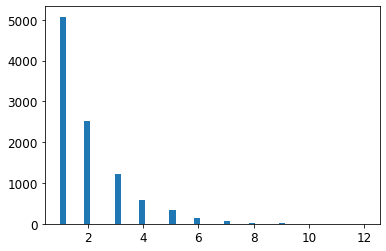
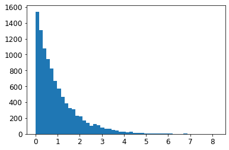
Exercise solutions
1.
Question: Try a Support Vector Machine regressor (sklearn.svm.SVR), with various hyperparameters such as kernel="linear" (with various values for the C hyperparameter) or kernel="rbf" (with various values for the C and gamma hyperparameters). Don’t worry about what these hyperparameters mean for now. How does the best SVR predictor perform?
Warning: the following cell may take close to 30 minutes to run, or more depending on your hardware.
from sklearn.model_selection import GridSearchCV
param_grid = [
{'kernel': ['linear'], 'C': [10., 30., 100., 300., 1000., 3000., 10000., 30000.0]},
{'kernel': ['rbf'], 'C': [1.0, 3.0, 10., 30., 100., 300., 1000.0],
'gamma': [0.01, 0.03, 0.1, 0.3, 1.0, 3.0]},
]
svm_reg = SVR()
grid_search = GridSearchCV(svm_reg, param_grid, cv=5, scoring='neg_mean_squared_error', verbose=2)
grid_search.fit(housing_prepared, housing_labels)Fitting 5 folds for each of 50 candidates, totalling 250 fits
[CV] C=10.0, kernel=linear ...........................................
[CV] ............................ C=10.0, kernel=linear, total= 3.9s
[CV] C=10.0, kernel=linear ...........................................
[CV] ............................ C=10.0, kernel=linear, total= 3.9s
[CV] C=10.0, kernel=linear ...........................................
[CV] ............................ C=10.0, kernel=linear, total= 4.6s
[CV] C=10.0, kernel=linear ...........................................
[CV] ............................ C=10.0, kernel=linear, total= 4.2s
[CV] C=10.0, kernel=linear ...........................................
[CV] ............................ C=10.0, kernel=linear, total= 4.5s
[CV] C=30.0, kernel=linear ...........................................
[CV] ............................ C=30.0, kernel=linear, total= 4.1s
[CV] C=30.0, kernel=linear ...........................................
[CV] ............................ C=30.0, kernel=linear, total= 4.2s
[CV] C=30.0, kernel=linear ...........................................
[CV] ............................ C=30.0, kernel=linear, total= 4.3s
[CV] C=30.0, kernel=linear ...........................................
[CV] ............................ C=30.0, kernel=linear, total= 4.0s
[CV] C=30.0, kernel=linear ...........................................
[CV] ............................ C=30.0, kernel=linear, total= 3.9s
[CV] C=100.0, kernel=linear ..........................................
[CV] ........................... C=100.0, kernel=linear, total= 3.9s
[CV] C=100.0, kernel=linear ..........................................
[CV] ........................... C=100.0, kernel=linear, total= 4.0s
[CV] C=100.0, kernel=linear ..........................................
[CV] ........................... C=100.0, kernel=linear, total= 4.0s
[CV] C=100.0, kernel=linear ..........................................
[CV] ........................... C=100.0, kernel=linear, total= 4.0s
[CV] C=100.0, kernel=linear ..........................................
[CV] ........................... C=100.0, kernel=linear, total= 3.9s
[CV] C=300.0, kernel=linear ..........................................
[CV] ........................... C=300.0, kernel=linear, total= 4.1s
<<434 more lines>>
[CV] C=1000.0, gamma=0.1, kernel=rbf .................................
[CV] .................. C=1000.0, gamma=0.1, kernel=rbf, total= 6.7s
[CV] C=1000.0, gamma=0.1, kernel=rbf .................................
[CV] .................. C=1000.0, gamma=0.1, kernel=rbf, total= 6.8s
[CV] C=1000.0, gamma=0.3, kernel=rbf .................................
[CV] .................. C=1000.0, gamma=0.3, kernel=rbf, total= 6.7s
[CV] C=1000.0, gamma=0.3, kernel=rbf .................................
[CV] .................. C=1000.0, gamma=0.3, kernel=rbf, total= 6.7s
[CV] C=1000.0, gamma=0.3, kernel=rbf .................................
[CV] .................. C=1000.0, gamma=0.3, kernel=rbf, total= 6.7s
[CV] C=1000.0, gamma=0.3, kernel=rbf .................................
[CV] .................. C=1000.0, gamma=0.3, kernel=rbf, total= 6.7s
[CV] C=1000.0, gamma=0.3, kernel=rbf .................................
[CV] .................. C=1000.0, gamma=0.3, kernel=rbf, total= 6.7s
[CV] C=1000.0, gamma=1.0, kernel=rbf .................................
[CV] .................. C=1000.0, gamma=1.0, kernel=rbf, total= 6.7s
[CV] C=1000.0, gamma=1.0, kernel=rbf .................................
[CV] .................. C=1000.0, gamma=1.0, kernel=rbf, total= 6.8s
[CV] C=1000.0, gamma=1.0, kernel=rbf .................................
[CV] .................. C=1000.0, gamma=1.0, kernel=rbf, total= 6.7s
[CV] C=1000.0, gamma=1.0, kernel=rbf .................................
[CV] .................. C=1000.0, gamma=1.0, kernel=rbf, total= 6.7s
[CV] C=1000.0, gamma=1.0, kernel=rbf .................................
[CV] .................. C=1000.0, gamma=1.0, kernel=rbf, total= 6.7s
[CV] C=1000.0, gamma=3.0, kernel=rbf .................................
[CV] .................. C=1000.0, gamma=3.0, kernel=rbf, total= 7.4s
[CV] C=1000.0, gamma=3.0, kernel=rbf .................................
[CV] .................. C=1000.0, gamma=3.0, kernel=rbf, total= 7.4s
[CV] C=1000.0, gamma=3.0, kernel=rbf .................................
[CV] .................. C=1000.0, gamma=3.0, kernel=rbf, total= 7.4s
[CV] C=1000.0, gamma=3.0, kernel=rbf .................................
[CV] .................. C=1000.0, gamma=3.0, kernel=rbf, total= 7.4s
[CV] C=1000.0, gamma=3.0, kernel=rbf .................................
[CV] .................. C=1000.0, gamma=3.0, kernel=rbf, total= 7.3s[Parallel(n_jobs=1)]: Using backend SequentialBackend with 1 concurrent workers.
[Parallel(n_jobs=1)]: Done 1 out of 1 | elapsed: 3.9s remaining: 0.0s
[Parallel(n_jobs=1)]: Done 250 out of 250 | elapsed: 26.4min finishedGridSearchCV(cv=5, estimator=SVR(),
param_grid=[{'C': [10.0, 30.0, 100.0, 300.0, 1000.0, 3000.0,
10000.0, 30000.0],
'kernel': ['linear']},
{'C': [1.0, 3.0, 10.0, 30.0, 100.0, 300.0, 1000.0],
'gamma': [0.01, 0.03, 0.1, 0.3, 1.0, 3.0],
'kernel': ['rbf']}],
scoring='neg_mean_squared_error', verbose=2)The best model achieves the following score (evaluated using 5-fold cross validation):
negative_mse = grid_search.best_score_
rmse = np.sqrt(-negative_mse)
rmse70363.84006944533That’s much worse than the RandomForestRegressor. Let’s check the best hyperparameters found:
grid_search.best_params_{'C': 30000.0, 'kernel': 'linear'}The linear kernel seems better than the RBF kernel. Notice that the value of C is the maximum tested value. When this happens you definitely want to launch the grid search again with higher values for C (removing the smallest values), because it is likely that higher values of C will be better.
2.
Question: Try replacing GridSearchCV with RandomizedSearchCV.
Warning: the following cell may take close to 45 minutes to run, or more depending on your hardware.
from sklearn.model_selection import RandomizedSearchCV
from scipy.stats import expon, reciprocal
# see https://docs.scipy.org/doc/scipy/reference/stats.html
# for `expon()` and `reciprocal()` documentation and more probability distribution functions.
# Note: gamma is ignored when kernel is "linear"
param_distribs = {
'kernel': ['linear', 'rbf'],
'C': reciprocal(20, 200000),
'gamma': expon(scale=1.0),
}
svm_reg = SVR()
rnd_search = RandomizedSearchCV(svm_reg, param_distributions=param_distribs,
n_iter=50, cv=5, scoring='neg_mean_squared_error',
verbose=2, random_state=42)
rnd_search.fit(housing_prepared, housing_labels)Fitting 5 folds for each of 50 candidates, totalling 250 fits
[CV] C=629.782329591372, gamma=3.010121430917521, kernel=linear ......
[CV] C=629.782329591372, gamma=3.010121430917521, kernel=linear, total= 4.2s
[CV] C=629.782329591372, gamma=3.010121430917521, kernel=linear ......
[CV] C=629.782329591372, gamma=3.010121430917521, kernel=linear, total= 4.0s
[CV] C=629.782329591372, gamma=3.010121430917521, kernel=linear ......
[CV] C=629.782329591372, gamma=3.010121430917521, kernel=linear, total= 4.5s
[CV] C=629.782329591372, gamma=3.010121430917521, kernel=linear ......
[CV] C=629.782329591372, gamma=3.010121430917521, kernel=linear, total= 4.5s
[CV] C=629.782329591372, gamma=3.010121430917521, kernel=linear ......
[CV] C=629.782329591372, gamma=3.010121430917521, kernel=linear, total= 4.3s
[CV] C=26290.206464300216, gamma=0.9084469696321253, kernel=rbf ......
[CV] C=26290.206464300216, gamma=0.9084469696321253, kernel=rbf, total= 8.6s
[CV] C=26290.206464300216, gamma=0.9084469696321253, kernel=rbf ......
[CV] C=26290.206464300216, gamma=0.9084469696321253, kernel=rbf, total= 9.1s
[CV] C=26290.206464300216, gamma=0.9084469696321253, kernel=rbf ......
[CV] C=26290.206464300216, gamma=0.9084469696321253, kernel=rbf, total= 8.8s
[CV] C=26290.206464300216, gamma=0.9084469696321253, kernel=rbf ......
[CV] C=26290.206464300216, gamma=0.9084469696321253, kernel=rbf, total= 8.9s
[CV] C=26290.206464300216, gamma=0.9084469696321253, kernel=rbf ......
[CV] C=26290.206464300216, gamma=0.9084469696321253, kernel=rbf, total= 9.0s
[CV] C=84.14107900575871, gamma=0.059838768608680676, kernel=rbf .....
[CV] C=84.14107900575871, gamma=0.059838768608680676, kernel=rbf, total= 7.0s
[CV] C=84.14107900575871, gamma=0.059838768608680676, kernel=rbf .....
[CV] C=84.14107900575871, gamma=0.059838768608680676, kernel=rbf, total= 7.0s
[CV] C=84.14107900575871, gamma=0.059838768608680676, kernel=rbf .....
[CV] C=84.14107900575871, gamma=0.059838768608680676, kernel=rbf, total= 6.9s
[CV] C=84.14107900575871, gamma=0.059838768608680676, kernel=rbf .....
[CV] C=84.14107900575871, gamma=0.059838768608680676, kernel=rbf, total= 7.0s
[CV] C=84.14107900575871, gamma=0.059838768608680676, kernel=rbf .....
[CV] C=84.14107900575871, gamma=0.059838768608680676, kernel=rbf, total= 7.0s
[CV] C=432.37884813148855, gamma=0.15416196746656105, kernel=linear ..
[CV] C=432.37884813148855, gamma=0.15416196746656105, kernel=linear, total= 4.6s
<<434 more lines>>
[CV] C=61217.04421344494, gamma=1.6279689407405564, kernel=rbf .......
[CV] C=61217.04421344494, gamma=1.6279689407405564, kernel=rbf, total= 25.2s
[CV] C=61217.04421344494, gamma=1.6279689407405564, kernel=rbf .......
[CV] C=61217.04421344494, gamma=1.6279689407405564, kernel=rbf, total= 23.2s
[CV] C=926.9787684096649, gamma=2.147979593060577, kernel=rbf ........
[CV] C=926.9787684096649, gamma=2.147979593060577, kernel=rbf, total= 5.7s
[CV] C=926.9787684096649, gamma=2.147979593060577, kernel=rbf ........
[CV] C=926.9787684096649, gamma=2.147979593060577, kernel=rbf, total= 5.7s
[CV] C=926.9787684096649, gamma=2.147979593060577, kernel=rbf ........
[CV] C=926.9787684096649, gamma=2.147979593060577, kernel=rbf, total= 5.7s
[CV] C=926.9787684096649, gamma=2.147979593060577, kernel=rbf ........
[CV] C=926.9787684096649, gamma=2.147979593060577, kernel=rbf, total= 5.8s
[CV] C=926.9787684096649, gamma=2.147979593060577, kernel=rbf ........
[CV] C=926.9787684096649, gamma=2.147979593060577, kernel=rbf, total= 5.6s
[CV] C=33946.157064934, gamma=2.2642426492862313, kernel=linear ......
[CV] C=33946.157064934, gamma=2.2642426492862313, kernel=linear, total= 10.0s
[CV] C=33946.157064934, gamma=2.2642426492862313, kernel=linear ......
[CV] C=33946.157064934, gamma=2.2642426492862313, kernel=linear, total= 9.7s
[CV] C=33946.157064934, gamma=2.2642426492862313, kernel=linear ......
[CV] C=33946.157064934, gamma=2.2642426492862313, kernel=linear, total= 8.9s
[CV] C=33946.157064934, gamma=2.2642426492862313, kernel=linear ......
[CV] C=33946.157064934, gamma=2.2642426492862313, kernel=linear, total= 10.4s
[CV] C=33946.157064934, gamma=2.2642426492862313, kernel=linear ......
[CV] C=33946.157064934, gamma=2.2642426492862313, kernel=linear, total= 9.3s
[CV] C=84789.82947739525, gamma=0.3176359085304841, kernel=linear ....
[CV] C=84789.82947739525, gamma=0.3176359085304841, kernel=linear, total= 25.8s
[CV] C=84789.82947739525, gamma=0.3176359085304841, kernel=linear ....
[CV] C=84789.82947739525, gamma=0.3176359085304841, kernel=linear, total= 18.5s
[CV] C=84789.82947739525, gamma=0.3176359085304841, kernel=linear ....
[CV] C=84789.82947739525, gamma=0.3176359085304841, kernel=linear, total= 28.3s
[CV] C=84789.82947739525, gamma=0.3176359085304841, kernel=linear ....
[CV] C=84789.82947739525, gamma=0.3176359085304841, kernel=linear, total= 20.8s
[CV] C=84789.82947739525, gamma=0.3176359085304841, kernel=linear ....
[CV] C=84789.82947739525, gamma=0.3176359085304841, kernel=linear, total= 15.6s[Parallel(n_jobs=1)]: Using backend SequentialBackend with 1 concurrent workers.
[Parallel(n_jobs=1)]: Done 1 out of 1 | elapsed: 4.2s remaining: 0.0s
[Parallel(n_jobs=1)]: Done 250 out of 250 | elapsed: 44.0min finishedRandomizedSearchCV(cv=5, estimator=SVR(), n_iter=50,
param_distributions={'C': <scipy.stats._distn_infrastructure.rv_frozen object at 0x7f9bd002c790>,
'gamma': <scipy.stats._distn_infrastructure.rv_frozen object at 0x7f9bd002cb10>,
'kernel': ['linear', 'rbf']},
random_state=42, scoring='neg_mean_squared_error',
verbose=2)The best model achieves the following score (evaluated using 5-fold cross validation):
negative_mse = rnd_search.best_score_
rmse = np.sqrt(-negative_mse)
rmse54767.960710084146Now this is much closer to the performance of the RandomForestRegressor (but not quite there yet). Let’s check the best hyperparameters found:
rnd_search.best_params_{'C': 157055.10989448498, 'gamma': 0.26497040005002437, 'kernel': 'rbf'}This time the search found a good set of hyperparameters for the RBF kernel. Randomized search tends to find better hyperparameters than grid search in the same amount of time.
Let’s look at the exponential distribution we used, with scale=1.0. Note that some samples are much larger or smaller than 1.0, but when you look at the log of the distribution, you can see that most values are actually concentrated roughly in the range of exp(-2) to exp(+2), which is about 0.1 to 7.4.
expon_distrib = expon(scale=1.)
samples = expon_distrib.rvs(10000, random_state=42)
plt.figure(figsize=(10, 4))
plt.subplot(121)
plt.title("Exponential distribution (scale=1.0)")
plt.hist(samples, bins=50)
plt.subplot(122)
plt.title("Log of this distribution")
plt.hist(np.log(samples), bins=50)
plt.show()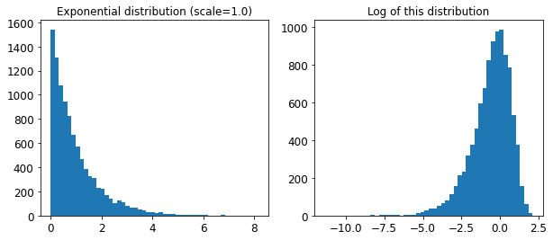
The distribution we used for C looks quite different: the scale of the samples is picked from a uniform distribution within a given range, which is why the right graph, which represents the log of the samples, looks roughly constant. This distribution is useful when you don’t have a clue of what the target scale is:
reciprocal_distrib = reciprocal(20, 200000)
samples = reciprocal_distrib.rvs(10000, random_state=42)
plt.figure(figsize=(10, 4))
plt.subplot(121)
plt.title("Reciprocal distribution (scale=1.0)")
plt.hist(samples, bins=50)
plt.subplot(122)
plt.title("Log of this distribution")
plt.hist(np.log(samples), bins=50)
plt.show()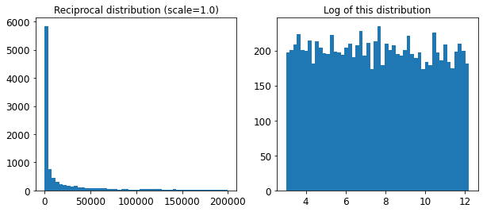
The reciprocal distribution is useful when you have no idea what the scale of the hyperparameter should be (indeed, as you can see on the figure on the right, all scales are equally likely, within the given range), whereas the exponential distribution is best when you know (more or less) what the scale of the hyperparameter should be.
3.
Question: Try adding a transformer in the preparation pipeline to select only the most important attributes.
from sklearn.base import BaseEstimator, TransformerMixin
def indices_of_top_k(arr, k):
return np.sort(np.argpartition(np.array(arr), -k)[-k:])
class TopFeatureSelector(BaseEstimator, TransformerMixin):
def __init__(self, feature_importances, k):
self.feature_importances = feature_importances
self.k = k
def fit(self, X, y=None):
self.feature_indices_ = indices_of_top_k(self.feature_importances, self.k)
return self
def transform(self, X):
return X[:, self.feature_indices_]Note: this feature selector assumes that you have already computed the feature importances somehow (for example using a RandomForestRegressor). You may be tempted to compute them directly in the TopFeatureSelector’s fit() method, however this would likely slow down grid/randomized search since the feature importances would have to be computed for every hyperparameter combination (unless you implement some sort of cache).
Let’s define the number of top features we want to keep:
k = 5Now let’s look for the indices of the top k features:
top_k_feature_indices = indices_of_top_k(feature_importances, k)
top_k_feature_indicesarray([ 0, 1, 7, 9, 12])np.array(attributes)[top_k_feature_indices]array(['longitude', 'latitude', 'median_income', 'pop_per_hhold',
'INLAND'], dtype='<U18')Let’s double check that these are indeed the top k features:
sorted(zip(feature_importances, attributes), reverse=True)[:k][(0.36615898061813423, 'median_income'),
(0.16478099356159054, 'INLAND'),
(0.10879295677551575, 'pop_per_hhold'),
(0.07334423551601243, 'longitude'),
(0.06290907048262032, 'latitude')]Looking good… Now let’s create a new pipeline that runs the previously defined preparation pipeline, and adds top k feature selection:
preparation_and_feature_selection_pipeline = Pipeline([
('preparation', full_pipeline),
('feature_selection', TopFeatureSelector(feature_importances, k))
])housing_prepared_top_k_features = preparation_and_feature_selection_pipeline.fit_transform(housing)Let’s look at the features of the first 3 instances:
housing_prepared_top_k_features[0:3]array([[-1.15604281, 0.77194962, -0.61493744, -0.08649871, 0. ],
[-1.17602483, 0.6596948 , 1.33645936, -0.03353391, 0. ],
[ 1.18684903, -1.34218285, -0.5320456 , -0.09240499, 0. ]])Now let’s double check that these are indeed the top k features:
housing_prepared[0:3, top_k_feature_indices]array([[-1.15604281, 0.77194962, -0.61493744, -0.08649871, 0. ],
[-1.17602483, 0.6596948 , 1.33645936, -0.03353391, 0. ],
[ 1.18684903, -1.34218285, -0.5320456 , -0.09240499, 0. ]])Works great! :)
4.
Question: Try creating a single pipeline that does the full data preparation plus the final prediction.
prepare_select_and_predict_pipeline = Pipeline([
('preparation', full_pipeline),
('feature_selection', TopFeatureSelector(feature_importances, k)),
('svm_reg', SVR(**rnd_search.best_params_))
])prepare_select_and_predict_pipeline.fit(housing, housing_labels)Pipeline(steps=[('preparation',
ColumnTransformer(transformers=[('num',
Pipeline(steps=[('imputer',
SimpleImputer(strategy='median')),
('attribs_adder',
CombinedAttributesAdder()),
('std_scaler',
StandardScaler())]),
['longitude', 'latitude',
'housing_median_age',
'total_rooms',
'total_bedrooms',
'population', 'households',
'median_income']),
('cat', OneHotEncoder(...
TopFeatureSelector(feature_importances=array([7.33442355e-02, 6.29090705e-02, 4.11437985e-02, 1.46726854e-02,
1.41064835e-02, 1.48742809e-02, 1.42575993e-02, 3.66158981e-01,
5.64191792e-02, 1.08792957e-01, 5.33510773e-02, 1.03114883e-02,
1.64780994e-01, 6.02803867e-05, 1.96041560e-03, 2.85647464e-03]),
k=5)),
('svm_reg',
SVR(C=157055.10989448498, gamma=0.26497040005002437))])Let’s try the full pipeline on a few instances:
some_data = housing.iloc[:4]
some_labels = housing_labels.iloc[:4]
print("Predictions:\t", prepare_select_and_predict_pipeline.predict(some_data))
print("Labels:\t\t", list(some_labels))Predictions: [203214.28978849 371846.88152572 173295.65441612 47328.3970888 ]
Labels: [286600.0, 340600.0, 196900.0, 46300.0]Well, the full pipeline seems to work fine. Of course, the predictions are not fantastic: they would be better if we used the best RandomForestRegressor that we found earlier, rather than the best SVR.
5.
Question: Automatically explore some preparation options using GridSearchCV.
Warning: the following cell may take close to 45 minutes to run, or more depending on your hardware.
param_grid = [{
'preparation__num__imputer__strategy': ['mean', 'median', 'most_frequent'],
'feature_selection__k': list(range(1, len(feature_importances) + 1))
}]
grid_search_prep = GridSearchCV(prepare_select_and_predict_pipeline, param_grid, cv=5,
scoring='neg_mean_squared_error', verbose=2)
grid_search_prep.fit(housing, housing_labels)Fitting 5 folds for each of 48 candidates, totalling 240 fits
[CV] feature_selection__k=1, preparation__num__imputer__strategy=mean
[CV] feature_selection__k=1, preparation__num__imputer__strategy=mean, total= 4.2s
[CV] feature_selection__k=1, preparation__num__imputer__strategy=mean
[CV] feature_selection__k=1, preparation__num__imputer__strategy=mean, total= 5.2s
[CV] feature_selection__k=1, preparation__num__imputer__strategy=mean
[CV] feature_selection__k=1, preparation__num__imputer__strategy=mean, total= 4.7s
[CV] feature_selection__k=1, preparation__num__imputer__strategy=mean
[CV] feature_selection__k=1, preparation__num__imputer__strategy=mean, total= 4.7s
[CV] feature_selection__k=1, preparation__num__imputer__strategy=mean
[CV] feature_selection__k=1, preparation__num__imputer__strategy=mean, total= 4.8s
[CV] feature_selection__k=1, preparation__num__imputer__strategy=median
[CV] feature_selection__k=1, preparation__num__imputer__strategy=median, total= 5.1s
[CV] feature_selection__k=1, preparation__num__imputer__strategy=median
[CV] feature_selection__k=1, preparation__num__imputer__strategy=median, total= 4.9s
[CV] feature_selection__k=1, preparation__num__imputer__strategy=median
[CV] feature_selection__k=1, preparation__num__imputer__strategy=median, total= 4.7s
[CV] feature_selection__k=1, preparation__num__imputer__strategy=median
[CV] feature_selection__k=1, preparation__num__imputer__strategy=median, total= 4.3s
[CV] feature_selection__k=1, preparation__num__imputer__strategy=median
[CV] feature_selection__k=1, preparation__num__imputer__strategy=median, total= 4.2s
[CV] feature_selection__k=1, preparation__num__imputer__strategy=most_frequent
[CV] feature_selection__k=1, preparation__num__imputer__strategy=most_frequent, total= 4.6s
[CV] feature_selection__k=1, preparation__num__imputer__strategy=most_frequent
[CV] feature_selection__k=1, preparation__num__imputer__strategy=most_frequent, total= 4.3s
[CV] feature_selection__k=1, preparation__num__imputer__strategy=most_frequent
[CV] feature_selection__k=1, preparation__num__imputer__strategy=most_frequent, total= 4.4s
[CV] feature_selection__k=1, preparation__num__imputer__strategy=most_frequent
[CV] feature_selection__k=1, preparation__num__imputer__strategy=most_frequent, total= 4.7s
[CV] feature_selection__k=1, preparation__num__imputer__strategy=most_frequent
[CV] feature_selection__k=1, preparation__num__imputer__strategy=most_frequent, total= 4.8s
[CV] feature_selection__k=2, preparation__num__imputer__strategy=mean
[CV] feature_selection__k=2, preparation__num__imputer__strategy=mean, total= 4.8s
<<414 more lines>>
[CV] feature_selection__k=15, preparation__num__imputer__strategy=most_frequent
[CV] feature_selection__k=15, preparation__num__imputer__strategy=most_frequent, total= 15.8s
[CV] feature_selection__k=15, preparation__num__imputer__strategy=most_frequent
[CV] feature_selection__k=15, preparation__num__imputer__strategy=most_frequent, total= 19.8s
[CV] feature_selection__k=16, preparation__num__imputer__strategy=mean
[CV] feature_selection__k=16, preparation__num__imputer__strategy=mean, total= 17.9s
[CV] feature_selection__k=16, preparation__num__imputer__strategy=mean
[CV] feature_selection__k=16, preparation__num__imputer__strategy=mean, total= 19.2s
[CV] feature_selection__k=16, preparation__num__imputer__strategy=mean
[CV] feature_selection__k=16, preparation__num__imputer__strategy=mean, total= 18.2s
[CV] feature_selection__k=16, preparation__num__imputer__strategy=mean
[CV] feature_selection__k=16, preparation__num__imputer__strategy=mean, total= 19.1s
[CV] feature_selection__k=16, preparation__num__imputer__strategy=mean
[CV] feature_selection__k=16, preparation__num__imputer__strategy=mean, total= 16.4s
[CV] feature_selection__k=16, preparation__num__imputer__strategy=median
[CV] feature_selection__k=16, preparation__num__imputer__strategy=median, total= 17.9s
[CV] feature_selection__k=16, preparation__num__imputer__strategy=median
[CV] feature_selection__k=16, preparation__num__imputer__strategy=median, total= 19.2s
[CV] feature_selection__k=16, preparation__num__imputer__strategy=median
[CV] feature_selection__k=16, preparation__num__imputer__strategy=median, total= 20.5s
[CV] feature_selection__k=16, preparation__num__imputer__strategy=median
[CV] feature_selection__k=16, preparation__num__imputer__strategy=median, total= 17.1s
[CV] feature_selection__k=16, preparation__num__imputer__strategy=median
[CV] feature_selection__k=16, preparation__num__imputer__strategy=median, total= 20.3s
[CV] feature_selection__k=16, preparation__num__imputer__strategy=most_frequent
[CV] feature_selection__k=16, preparation__num__imputer__strategy=most_frequent, total= 16.7s
[CV] feature_selection__k=16, preparation__num__imputer__strategy=most_frequent
[CV] feature_selection__k=16, preparation__num__imputer__strategy=most_frequent, total= 19.4s
[CV] feature_selection__k=16, preparation__num__imputer__strategy=most_frequent
[CV] feature_selection__k=16, preparation__num__imputer__strategy=most_frequent, total= 17.2s
[CV] feature_selection__k=16, preparation__num__imputer__strategy=most_frequent
[CV] feature_selection__k=16, preparation__num__imputer__strategy=most_frequent, total= 17.5s
[CV] feature_selection__k=16, preparation__num__imputer__strategy=most_frequent
[CV] feature_selection__k=16, preparation__num__imputer__strategy=most_frequent, total= 19.1s[Parallel(n_jobs=1)]: Using backend SequentialBackend with 1 concurrent workers.
[Parallel(n_jobs=1)]: Done 1 out of 1 | elapsed: 4.2s remaining: 0.0s
[Parallel(n_jobs=1)]: Done 240 out of 240 | elapsed: 42.3min finishedGridSearchCV(cv=5,
estimator=Pipeline(steps=[('preparation',
ColumnTransformer(transformers=[('num',
Pipeline(steps=[('imputer',
SimpleImputer(strategy='median')),
('attribs_adder',
CombinedAttributesAdder()),
('std_scaler',
StandardScaler())]),
['longitude',
'latitude',
'housing_median_age',
'total_rooms',
'total_bedrooms',
'population',
'households',
'median_inc...
5.64191792e-02, 1.08792957e-01, 5.33510773e-02, 1.03114883e-02,
1.64780994e-01, 6.02803867e-05, 1.96041560e-03, 2.85647464e-03]),
k=5)),
('svm_reg',
SVR(C=157055.10989448498,
gamma=0.26497040005002437))]),
param_grid=[{'feature_selection__k': [1, 2, 3, 4, 5, 6, 7, 8, 9,
10, 11, 12, 13, 14, 15, 16],
'preparation__num__imputer__strategy': ['mean',
'median',
'most_frequent']}],
scoring='neg_mean_squared_error', verbose=2)grid_search_prep.best_params_{'feature_selection__k': 15,
'preparation__num__imputer__strategy': 'most_frequent'}The best imputer strategy is most_frequent and apparently almost all features are useful (15 out of 16). The last one (ISLAND) seems to just add some noise.
Congratulations! You already know quite a lot about Machine Learning. :)